Actual screenshots, not recreated mockups. Baseline is 07efb7f; implementation uses existing fictional class records. Prototype and app use different students, counts and lesson versions. No new misunderstandings were invented. All regular captures are 900px high. Native 200% captures use a 1440×1000 browser window, actual zoom 2, devicePixelRatio 2 and 712 CSS pixels of content width.
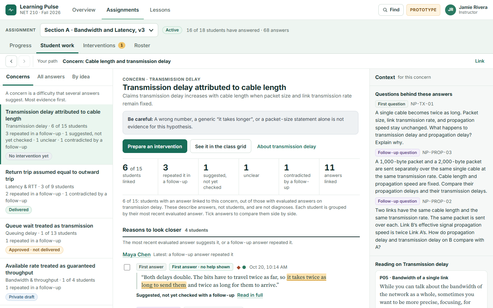
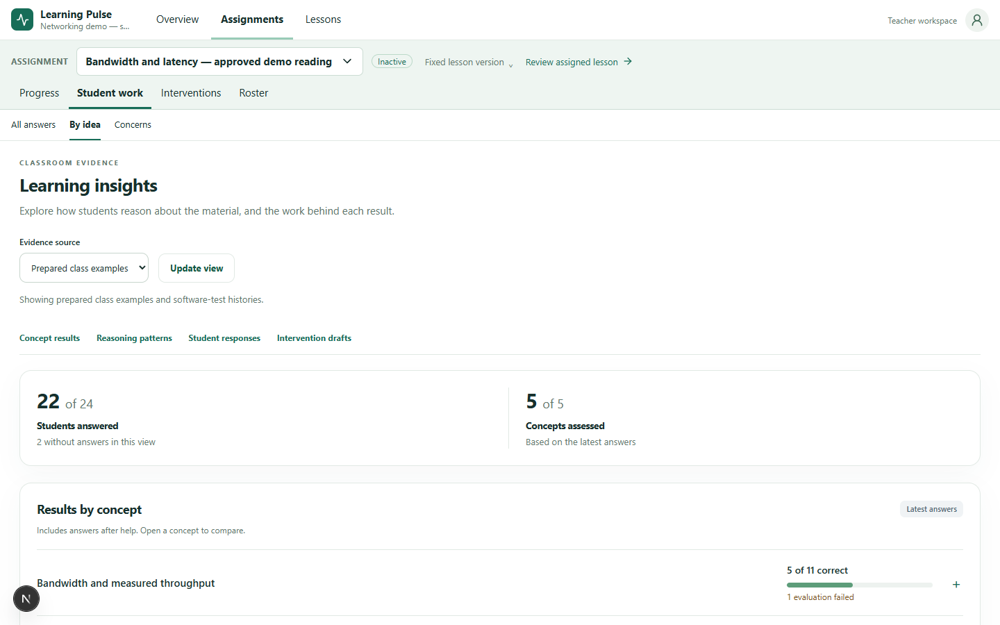
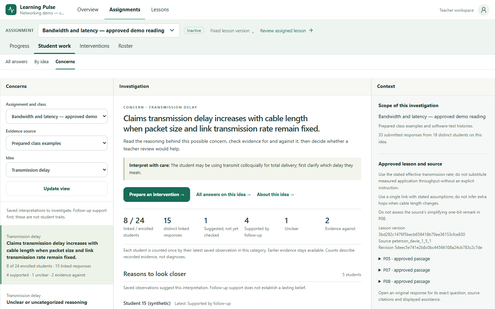
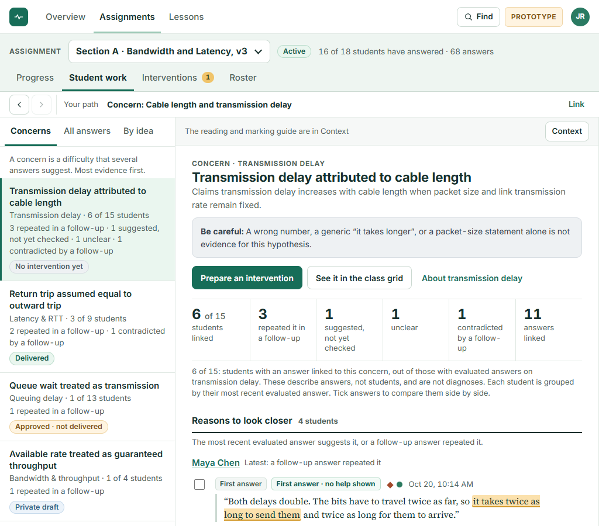
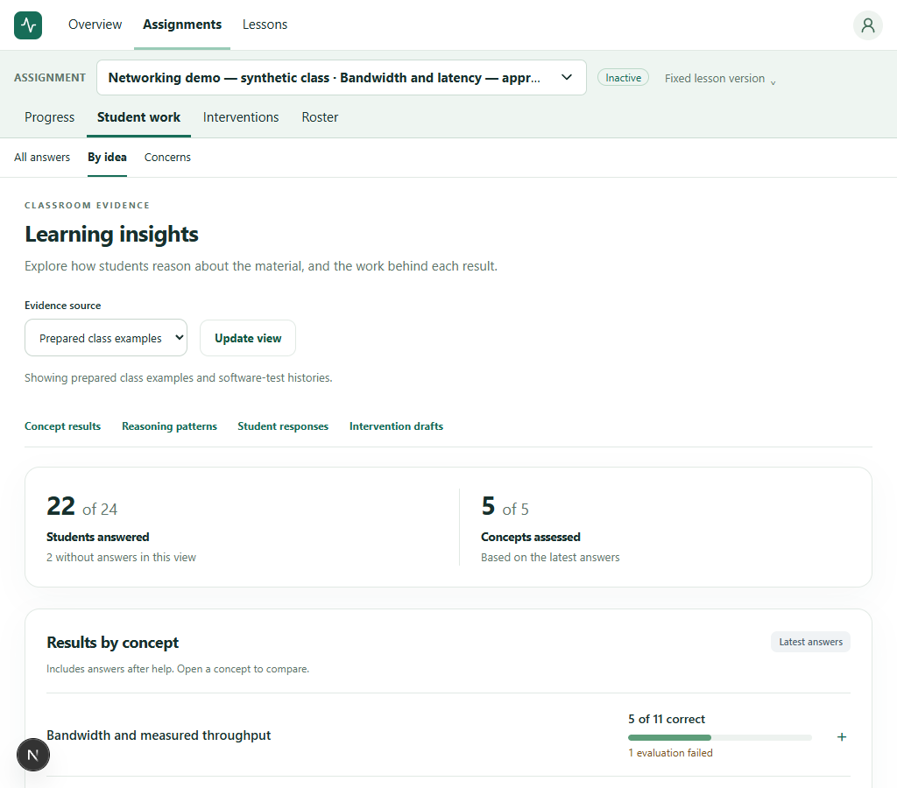
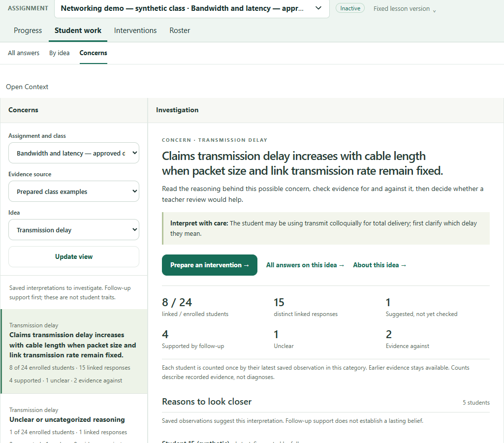
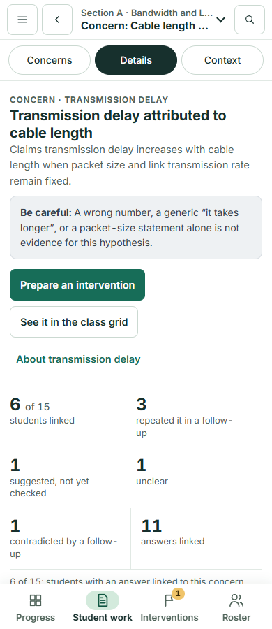
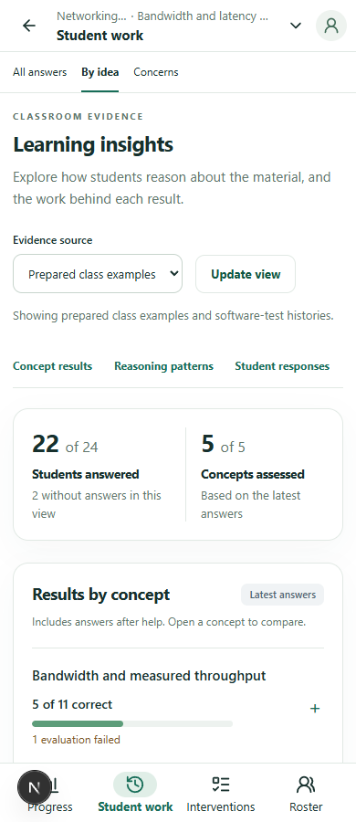
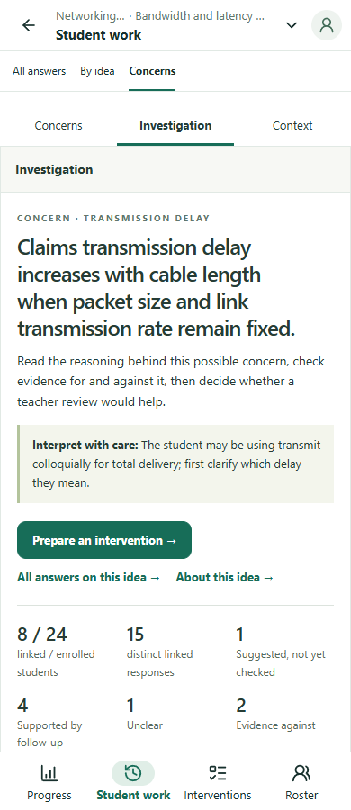
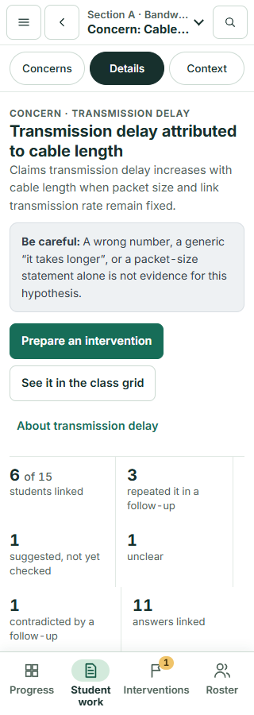
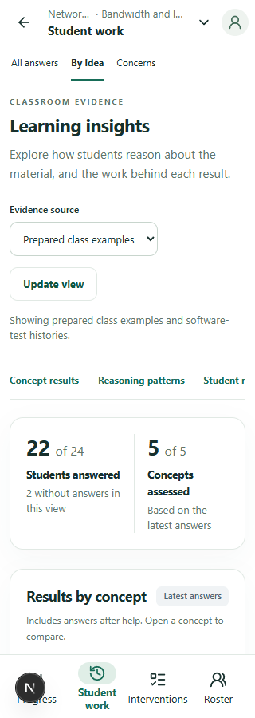
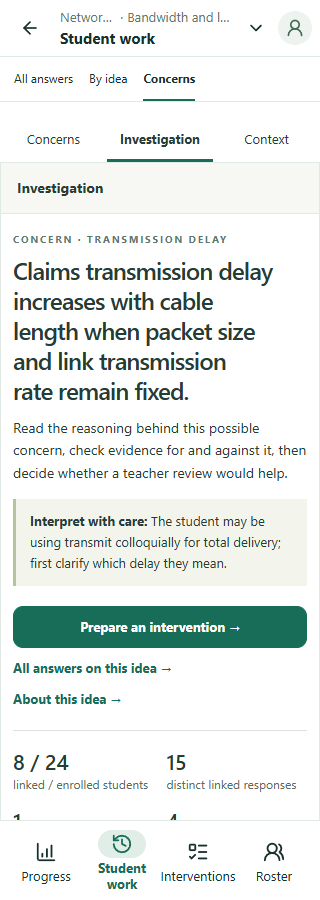
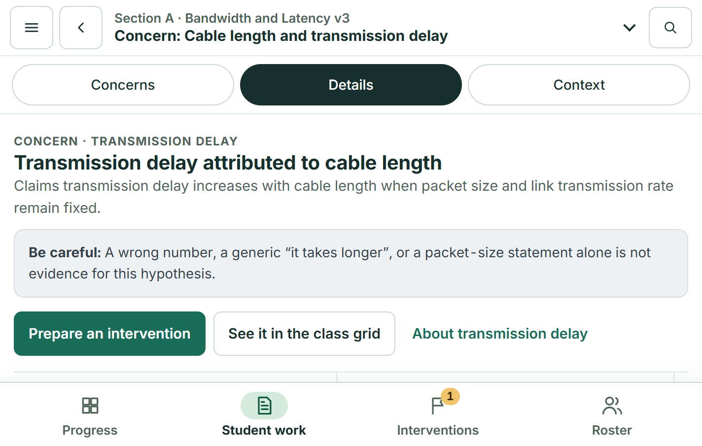
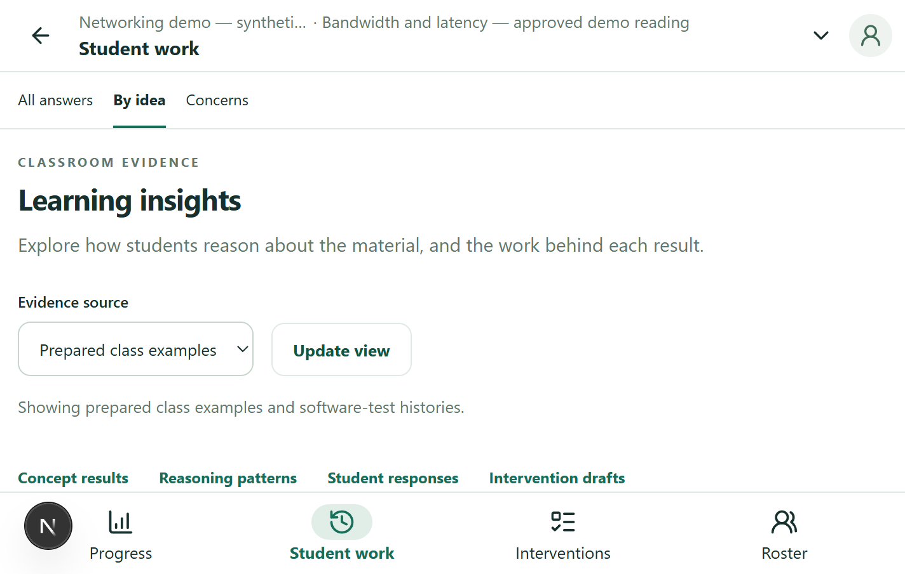
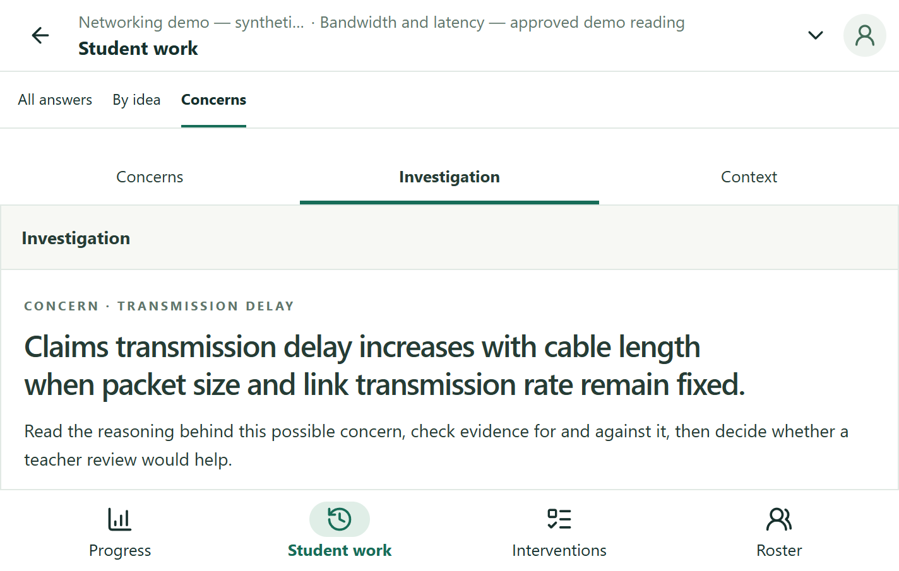
The implementation reuses existing situation metrics, labels their limits, retains earlier responses, and opens exact records in the real Evidence workspace.
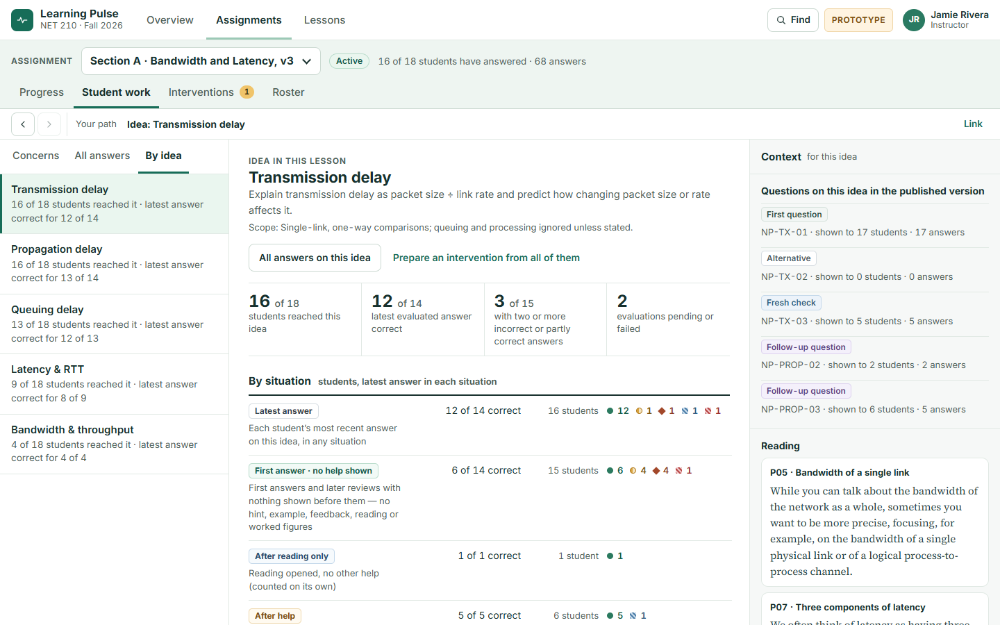
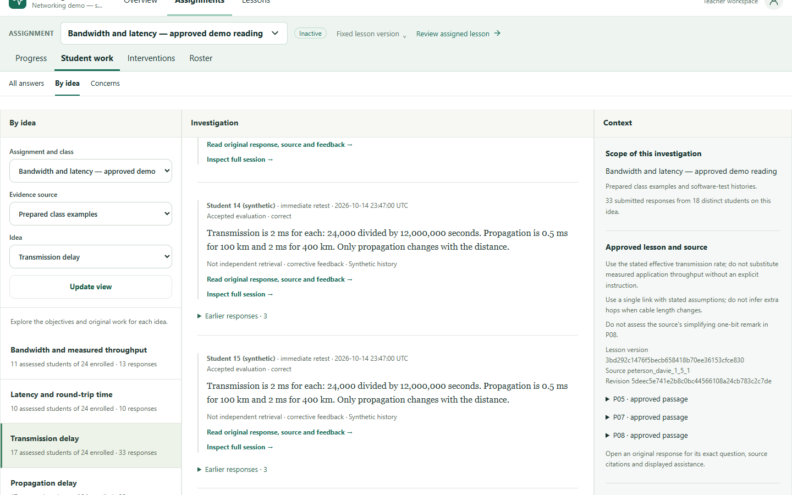
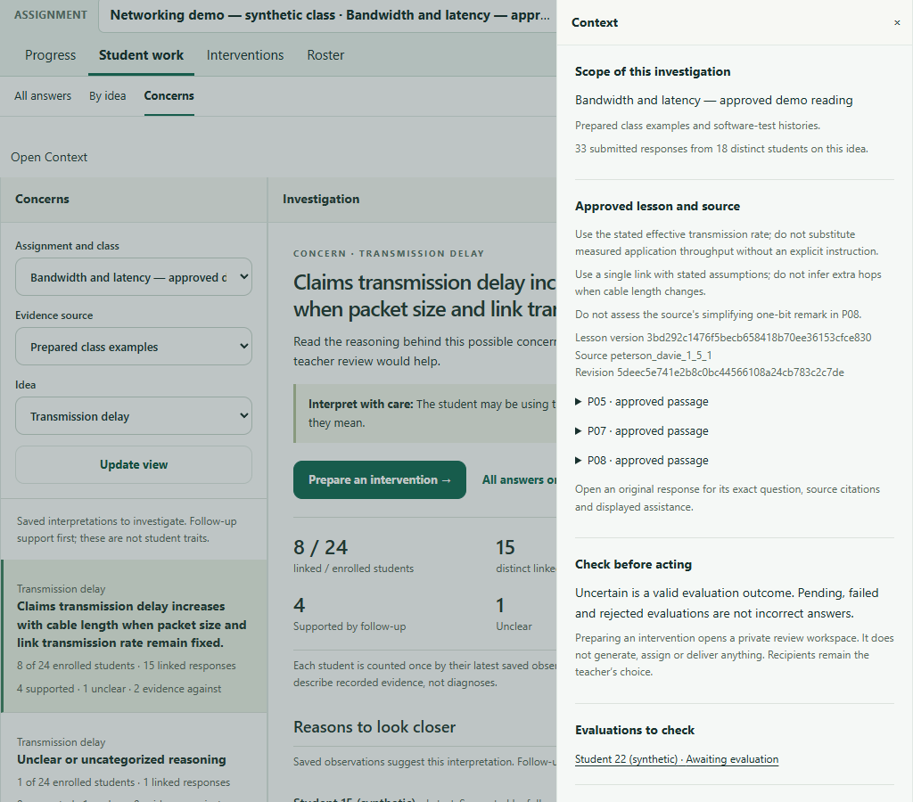